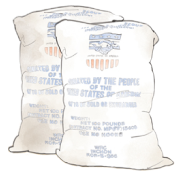
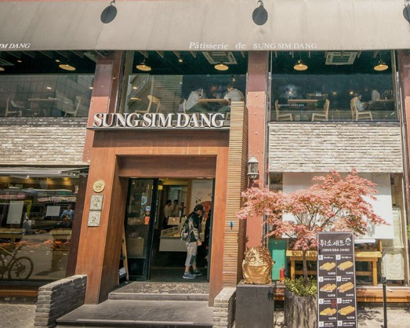
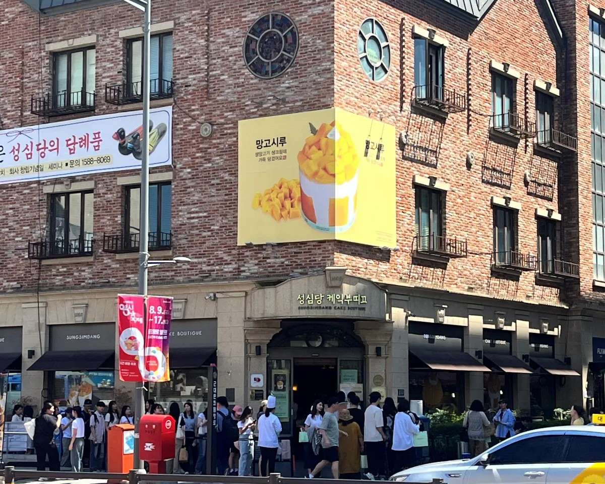
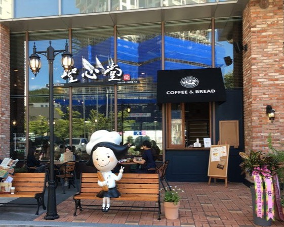

브랜드소개
CI
1956년 창립 이후 대전과 함께한 성심당의 정체성을 담은 로고
창업주의 예수성심에 대한 마음을 한자로 표현하였으며, 거룩한 마음을 지니고 값진 노동으로 빵을 만들어 모든 이를 만나 이롭게 하고자 하는 본질을 담았다.

설립 시기 및 창업 배경
성심당 창업주 故임길순·故한순덕 부부는 함경남도 함주 고향으로 1950년 한국전쟁 중 흥남부두 철수작전 마지막 피난민을 싣은 메러디스빅토리호에 기적적으로 몸을 싣어, 잠시 거제도에 머문 뒤 진해에 정착했습니다. 이후 서울로 이주하고자 열차를 타고 이동하던 중 열차 고장으로 의도치 않게 대전에 머물게 되었고 대흥동성당에서 원조 받은 밀가루 두 포대로 대전역 앞에서 찐빵집을 시작해 오늘날의 성심당이 되었습니다.

성심당본점
1956. 대전역 앞 작은 찐빵집, 대전의 문화가 되다.

성심당케익부띠끄
성심당만의 다양하고 특별한 케익을 만날수 있는 클래식한 공간

성심당DCC점
대전컨벤션센터를 찾는 세미나. 국제학술대회. 문화행사와 함께 만나는 향토기업 성심당